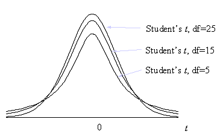

Student's t Distribution
Menu location: Analysis_Distributions_Student's t.
Student's t is the distribution with n degrees of freedom of :

- where z is the standard normal variable and χ² is a chi-square random variable with n degrees of freedom.
When n is large the distribution of t is close to normal. The largest differences between standard normal and t distributions occurs in the tails which is the most important area in statistical tests. You can see from the diagram below that a t distribution with fewer degrees of freedom has more of its values in the tails:

For samples from a normal distribution, the ratio of the mean and its standard error follow a t distribution. The number of degrees of freedom used should be equal to the sample size minus the number of estimated parameters. In t tests the estimated parameter is the standard deviation about the mean, therefore, degrees of freedom are n-1.
This family of distributions is associated with W. S. Gosset who, at the turn of the century, published his work under the pseudonym Student.
Technical Validation
StatsDirect uses the relationship between Student's t and the beta distribution in its calculation of tail areas and percentage points for t distributions. Soper's reduction method is used to integrate the incomplete beta function (Majumder and Bhttacharjee, 1973a, 1973b; Morris, 1992). A hybrid of conventional root finding methods is used to invert the function. Conventional root finding proved more reliable than some other methods such as Newton Raphson iteration on Wilson Hilferty starting estimates (Berry et al., 1990; Cran et al., 1977). StatsDirect does not use the beta distribution for the calculation of t percentage points when there are more than 60 degrees of freedom (n) (Hill 1970), when n is 2 then t=sqr(2/(P*(2-P))-2) and when n is 1 then t=cos((P*π)/2)/sin((P*p)/2).
Function Definition
The distribution function of a t distribution with n degrees of freedom is:

Γ(*) is the gamma function:

A t variable with n degrees of freedom can be transformed to an F variable with 1 and n degrees of freedom as t²=F. An F variable with ν1 and ν2 degrees of freedom can be transformed to a beta variable with parameters p=ν1/2 and q= ν2/2 as beta = ν1F(ν1+v2 F). The beta distribution with parameters p and q is: